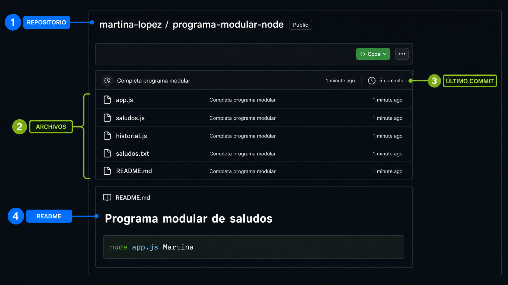
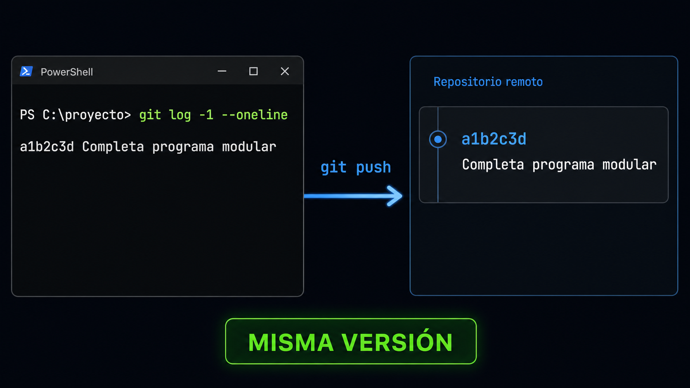

Probalo como visitante
- Copiá el enlace.
- Abrí una ventana privada.
- Pegá la URL sin iniciar sesión.
- Confirmá archivos y README.
- Verificá el acceso indicado.
Estructura mínima
Repositorio
programa-modular-node/
├── app.js
├── saludos.js
├── historial.js
├── historial.txt
└── README.mdREADME reproducible
¿Qué hace?
Una explicación breve.
¿Qué necesita?
La versión de Node.js.
¿Cómo se ejecuta?
El comando completo y argumento.
¿Qué debería ocurrir?
La salida y el archivo actualizado.
README.md
## Ejecutar
```bash
node app.js Martina
```Captura aislada, enlace a app.js, repositorio desactualizado o README sin comando.
Repositorio completo, módulos claros, README ejecutable y commit final visible.
Git y GitHub deben mostrar la misma versión
Terminal
git status
git log -1 --oneline
Revisá tres perspectivas
¿Subí lo correcto?
Revisá cambios, commit y push.
¿Puedo abrir y entender?
Probá el enlace sin tu sesión.
¿Puedo verificar?
Funcionamiento, organización y documentación.
COMPROBACIÓN
0/6Control final de evidencia
Marcá cada punto después de comprobarlo.